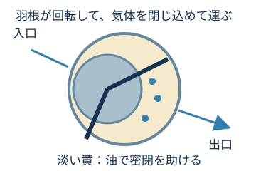
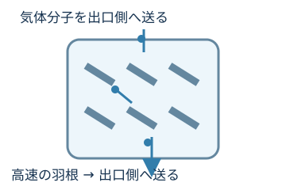

葵（あおい）
ポンプって、どれも同じように空気を出してるんじゃないの？
02では、ポンプを組み合わせて真空をつくりました。では、ポンプによって何が違うのでしょう？
葵（あおい）
ポンプって、どれも同じように空気を出してるんじゃないの？

陽斗（はると）
気体を外へ出すのは同じでも、やり方が違うのかな？

けー子ちゃん先生
そうですね。真空ポンプは、気体を外へ出す目的は同じでも、気体の運び方に違いがあります。
では、ポンプはどうやって気体を運んでいるのでしょう？
まずは、気体を外へ運ぶ基本的な動きを見てみましょう。

※実際の気体の運び方は、ポンプの種類によって異なります。
では、実際のポンプを見てみましょう。
ドライポンプは、気体を圧縮する部分に油を使わないポンプです。方式はいくつかありますが、ここでは代表例としてスクリュー式を見てみましょう。
※実際の内部形状や気体の圧縮のしかたは、機種・方式によって異なります。

気体を圧縮するところに油を使わないから、ドライなんだ！
POINT「ドライ」は、気体を圧縮する部分に油を使わないという意味。
※ドライポンプには複数の方式があります。装置全体が無潤滑という意味ではありません。

ロータリーポンプの代表例が、ロータリーベーンポンプです。回転する羽根で気体を閉じ込め、出口側へ運んで排出します。
油は、部品のすき間をふさいで気体が戻りにくくするなど、密閉を助けています。粗引きにも使われるポンプです。

ドライとロータリーは、どちらも気体を閉じ込めて運ぶ仲間なんだね。

気体が少なくなってきたら、高速で回る羽根で気体分子を出口側へ送ります。高真空をつくるときに使われる代表的なポンプです。
ただし、ターボ分子ポンプだけで大気圧から高真空までつくるわけではありません。ドライポンプなどと組み合わせて使います。

高真空までいけるなら、最初からターボだけ使えばいいんじゃない？

でも02で、ポンプには得意な圧力の範囲があるって習ったよね。

その通りです。ターボ分子ポンプは、ある程度気体を減らしてから力を発揮するポンプなんです。
ターボ分子ポンプは、前段側のポンプと組み合わせて高真空をつくる。
高真空で運転しているときの気体の経路の例です。始動時のバルブや粗引き経路は省略しています。
リレーでも、前のポンプが休むわけじゃないんだ。
そうですね。ターボが働いている間も、前段側のポンプが排気を続けて支える構成があります。
ドライポンプや油回転式ロータリーポンプなどが活躍。
ターボ分子ポンプなどが活躍。前段側のポンプと組み合わせて使います。
得意な圧力範囲は機種・方式・気体・装置条件で異なります。ここでは数値を暗記する必要はありません。
閉じ込めて運ぶ方法と、羽根で分子を送る方法がある。
ポンプには、それぞれ得意な圧力範囲がある。
1台ですべてを担当せず、得意な範囲を組み合わせて使うことがある。
図は仕組みを理解するための概念図です。形状・粒子数・圧力範囲は実機を再現していません。